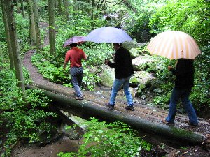
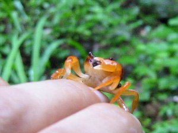
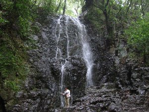
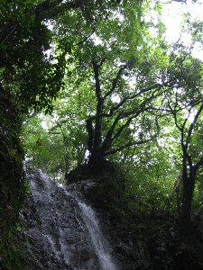

掛川でバイキング | ２００４年６月 |
|---|---|
| 当日の朝から雨。 全員が集合した時には雨足も激しくなる（皆さん、時間に正確ですね）。 雨の場合の企画どおりにボーリング場にいくも貸切でした。幸いにも雨足も弱まったため松葉の滝に向かうことに決定する。 松葉の滝 倉真温泉街（？）を抜け、トンネルを抜け、滝近くの駐車場に到着する。滝まで400ｍ程度の林道であるが、途中に渡りカニが大量出没し、われわれの行く手を阻む（べっしーの撮影対象となる）が、無事に滝つぼ近くまでに到達できました。 コースはコンクリートで固められているため足場には困りません。下流側にもよさげな滝がありましたが、下に降りれないため残念でした。 もう少し、ハードなコースにすれば皆さんの支持を得れたのではと考えます （あっけなさすぎ）。‥しかしこの周辺に酒屋が多いのはなぜだろうね。 | |
|  松葉の滝に行く途中の丸太橋 私は（べっしー）ここで転びそうになりました。 |  とにかく沢ガニが沢山！ 全部唐揚げにしたら、美味そうです！ |
| ならここ温泉 法泉寺温泉を抜け、居尻方面に車を走らす。ダム湖を横目で見ながら北上すれば目的地です。 こちらは昨年の９月より地区協力の下で設立した温泉です。私はこの近くの大尾山の登山の帰りに必ず寄っています。露天風呂付で塩っけが強い温泉です。 露天風呂で他のおじい様連中と温泉について話を続けた結果、のぼせ気味。でも皆さんのおかげでスタンプが余計に押すことができました（一定数で１回入浴無料になります）。 ちなみに雨天時には雨傘を頭に付け露天風呂に入れます♪一度試したら楽しいかも。 | |
|  これが松葉の滝 下に人が居るの分かります？ |  滝上部。深い意味は有りません |
| しばちゃんちのジャージ農園（？） 居尻方面から森町に抜ける道の途中に強烈な牛の絵の看板がある建屋があります。土日にしか営業をしていない。また某ＴＶ番組で紹介があったらしい。 牛乳、ソフトクリーム、プリンなど種類は多彩。選択に皆さん迷われたようです。私は牛乳とソフトをいきましたが、濃厚な味（？）には満足です。 牛乳は一般販売品とは異なる香り？味？がありました（１杯150円）。 さびすけ ＩＮ 某ホテル 食い倒れツアーの目的地。皆さん、ご満足いただけたでしょうか？ ノーマルのバイキングです。全種類とまではいきませんが、ほぼ制覇できたと考えます。 | |
| コメント：シュガー 写真：べっしー | |
当ホームページの文・写真等は無断転載禁止です。あしからず。